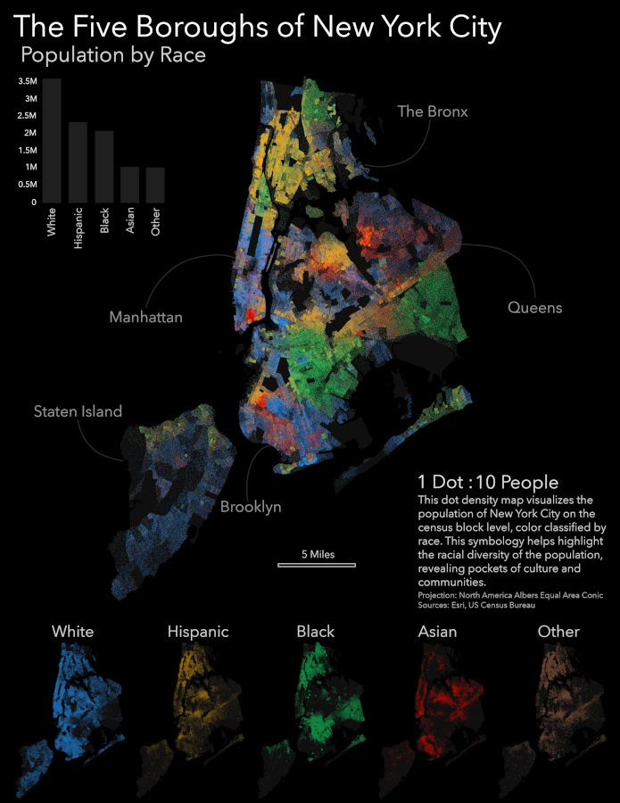
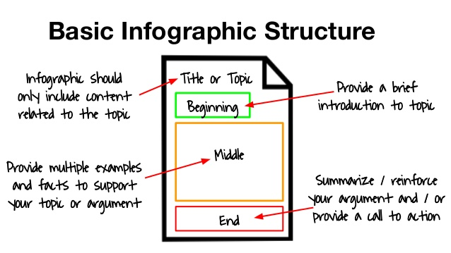
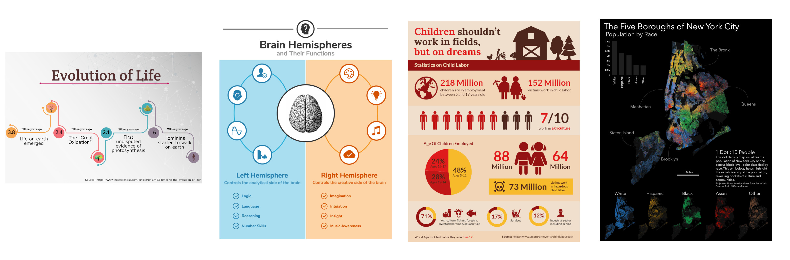
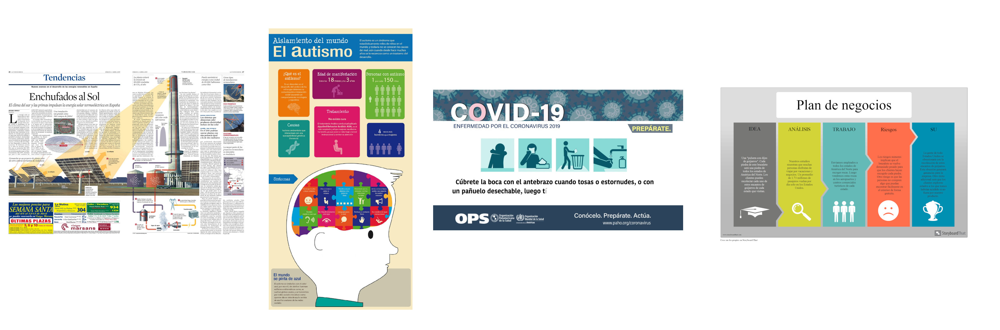
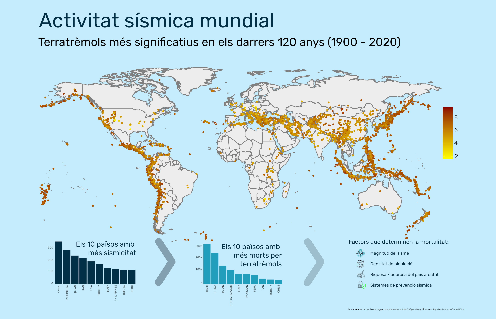

Podem dir que una infografia és una representació visual d'informació, una presentació o la narració d'una història, normalment de forma estàtica.

Preten comunicar una certa quantitat d'informació d'una manera entenedora i fàcil d'interpretar, amb un cop d'ull i pocs segons s'ha de copsar el que es vol comunicar, fins i tot si no som experts en el tema.
No es pot establir una data concreta del naixement de la infografia moderna, alguns autors situen els seus origens en les publicacions dels diaris dels segles XVIII i XIX.
Però el seu impuls definitiu és amb l'aparició de les eines informàtiques i la seva publicació en diaris com USA TODAY o NEW YORK TIMES que fa que el seu ús s'escampi a multitud de disciplines.
L'estructura d'una infografia sol ser una introducció amb un títol que comunica l'objectiu, algun pàrraf descriptiu, un cos principal i un tancament

Es poden representar molts tipus de dades, tant quantitatives com qualitatives, podem dir que aquestes donen lloc a diferents tipus d'infografies (cronològiques, comparatives, estadístiques, geogràfiques, jeràrquiques, ...)

Si ens atenem a la seva finalitat, ens donen una idea de les aplicacions de les infografies (periodístiques, didàctiques o educatives, informatives, empresarials)

Podem realitzar visualitzacions de dades molt simples i amb molta informació i per un public molt ampli, facils de compartir i recordar.
Tot i admetre molts tipus de dades, només les podem tractar de manera descriptiva, no podem entrar en detall sobre aquestes dades.
Font de les dades: Global Significant Earthquake Database from 2150BC (https://www.kaggle.com/datasets/mohitkr05/global-significant-earthquake-database-from-2150bc).
Tractament de dades: RStudio (lleguatge R)
Composició: GIMP

https://www.easel.ly/blog/wp-content/uploads/2020/02/timeline-of-the-evolution-of-life-infographic.png
https://s3.amazonaws.com/thumbnails.venngage.com/template/8dd2dac2-6cb7-4f31-8277-f641ad12b86d.png
https://venngage-wordpress.s3.amazonaws.com/uploads/2018/03/Science-Comparison-Infographic-Templates.png
https://lh3.googleusercontent.com/UDJfQPKfiPvIUFFdKsev1q0nxuPZQo3cw5vicIl-AH7vYw0iXlHqo9yMFo0KHSKjB2yPBIaOmouBCDZ_wy-8vZEZd_Ud5XjTUqRDe3fb-QJQDEZ24dqgHCwiNdCYvCE-sdenFPq7pA=w2400
https://elpixelhamuerto.wordpress.com/wp-content/uploads/2013/04/ingenieria-en-la-red-infografia-energia-solar.jpg
https://i.ytimg.com/vi/3SMxo1tfo7s/maxresdefault.jpg
https://www.orientacionandujar.es/2014/10/16/la-infografia-en-el-ambito-educativo-infografias-edicativas/el-autismo-infografia/
https://cdn.storyboardthat.com/storyboard-srcsets/es-examples/ejemplo-de-informacion-del-plan-de-negocios.webp